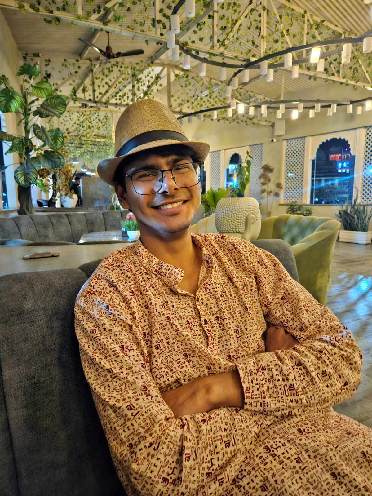

Welcome to my website.
I am a BS-MS (Bachelor of Science and Master of Science) dual degree holder, majoring in Physics from the Indian Institute of Science Education and Research (IISER), Mohali, India.
My research interests include magnetohydrodynamics (MHD), plasma/fluid waves, instabilities and turbulence, partially ionised plasmas (PIP), Magnetic Reconnection, numerical modelling of astrophysical plasmas, radiation processes in
astrophysical systems. I am currently looking for a PhD position in the above fields. Broadly speaking, I would like to work on analytic and numerical modelling plasma processes in the astrophysical contexts.
Other than research, I am very much interested in discussing films, cricket, some tennis, even music, and anything that excites me.
I love trying out new food and travelling, although, as of late, I am not doing either of those.